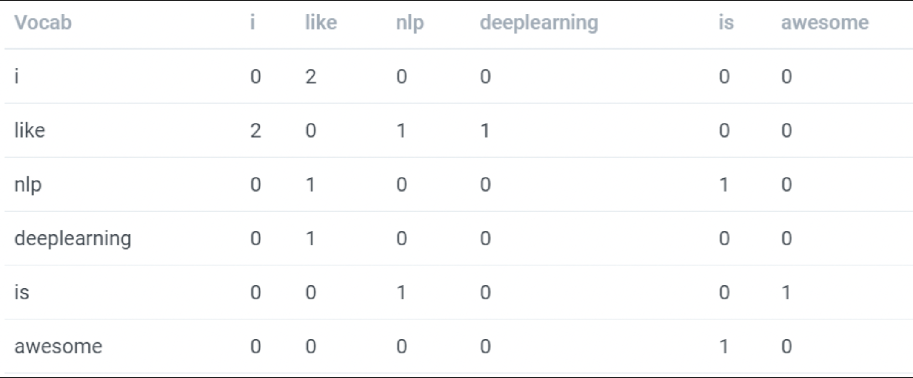
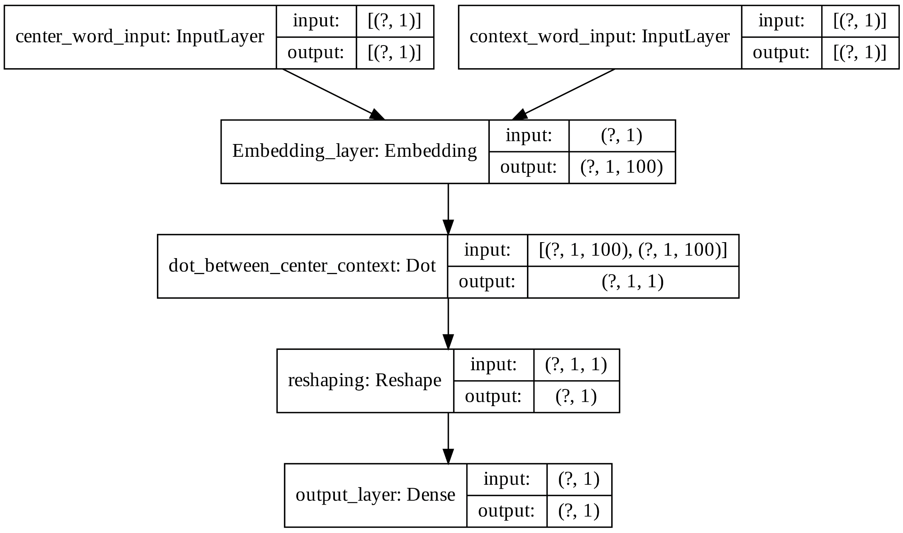

sent_list = ['I like deeplearning.', 'I like NLP.', 'NLP is awesome.']Advanced Feature Extraction from Text
NLP
feature extraction
word2vec
fasttext
Dense vector features for text
In the previous article, I discussed basic feature extraction methods like BOW, TFIDF but, these are very sparse in nature. In this tutorial, we will try to explore word vectors this gives a dense vector for each word. There are many ways to get the dense vector representation for the words. below are some of them
Co-occurrence Matrix and SVD
We can create a co-occurrence matrix of text and then get a low rank approximation of matrix to get the dense feature representation.
To create a co-occurrence matrix, you go through text setting a window size around each word. You then keep track of which words appear in that window.
lets create co-occurrence matrix with below sentences.
with window size of 1. the co-occurrence matrix is

like word came in context of i 2 times in window size one. in similar way, I updated above co-occurrence matrix with all counts.
Code
I have written a brute force version of code below.
import tensorflow as tf
import numpy as np
def cooccurrence_matrix(distance,sentances):
'''
Returns co-occurrence matrix of words with in a distance of occurrrence
input:
distance: distance between words(Window Size)
sentances: documets to check ( a list )
output:
co-occurance matrix in te order of list_words order
words list
'''
tokenizer = tf.keras.preprocessing.text.Tokenizer()
tokenizer.fit_on_texts(sentances)
list_words = list(tokenizer.word_index.keys())
#print(list_words)
#length of matrix needed
l = len(list_words)
#creating a zero matrix
com = np.zeros((l,l))
#creating word and index dict
dict_idx = {v:i for i,v in enumerate(list_words)}
for sentence in sentances:
sentence = tokenizer.texts_to_sequences([sentence])[0]
tokens = [tokenizer.index_word[i] for i in sentence]
#tokens= sentence.split()
for pos,token in enumerate(tokens):
#if eord is in required words
if token in list_words:
#start index to check any other word occure or not
start=max(0,pos-distance)
#end index
end=min(len(tokens),pos+distance+1)
for pos2 in range(start,end):
#if same position
if pos2==pos:
continue
# if same word
if token == tokens[pos2]:
continue
#if word found is in required words
if tokens[pos2] in list_words:
#index of word parent
row = dict_idx[token]
#index of occurance word
col = dict_idx[tokens[pos2]]
#adding value to that index
com[row,col] = com[row,col] + 1
return com, list_wordscoo = cooccurrence_matrix(1, sent_list)
print(coo[1])
print(coo[0])['i', 'like', 'nlp', 'deeplearning', 'is', 'awesome']
[[0. 2. 0. 0. 0. 0.]
[2. 0. 1. 1. 0. 0.]
[0. 1. 0. 0. 1. 0.]
[0. 1. 0. 0. 0. 0.]
[0. 0. 1. 0. 0. 1.]
[0. 0. 0. 0. 1. 0.]]Now we can use SVD to get low rank approximation matrix(This will give dense matrix)
from sklearn.decomposition import TruncatedSVD
tsvd = TruncatedSVD(n_components=3, n_iter=10, random_state=32 )
dense_vector = tsvd.fit_transform(coo[0], )
dense_vectorarray([[ 1.94649798e+00, 2.73880515e-15, -2.49727487e-01],
[-2.40633313e-15, 2.43040910e+00, -2.56144970e-01],
[ 1.20300191e+00, 1.58665133e-15, 4.04067562e-01],
[ 9.73248989e-01, 1.21830556e-15, -1.24863743e-01],
[ 7.73781546e-16, 5.73741760e-01, 1.08504750e+00],
[ 2.29752921e-01, 3.09635046e-16, 5.28931305e-01]])print("Vector of ", "'" , coo[1][1], "'", "is ", dense_vector[1])Vector of ' like ' is [-2.40633313e-15 2.43040910e+00 -2.56144970e-01]Word2Vec
I think, there are many articles and videos regarding the Mathematics and Theory of Word2Vec. So, I am giving some links to explore and I will try to explain code to train the custom Word2Vec. Please check the resources below.
youtube: https://www.youtube.com/watch?list=PLUOY9Q6mTP21Al_odE-v_lmHDjVMSO9BX&v=SSpSk1Io52w&feature=emb_title
You can read a good blog here
Please watch the above videos or read the above blog before going into the coding part.
Word2Vec using Gensim
We can train word2vec using gensim module with CBOW or Skip-Gram ( Hierarchical Softmax/Negative Sampling). It is one of the efficient ways to train word vectors. I am training word vectors using gensim, using IMDB reviews as a data corpus to train. In this, I am not training the best word vectors, only training for 10 iterations.
To train gensim word2vec module, we can give a list of sentences or a file a corpus file in LineSentence format. Here I am creating a list of sentences from my corpus. If you have huge data, please try to use LineSentence format to efficiently train your word vectors.
##getting sentence wise data
list_sents = [nltk.word_tokenize(sent) for sent_tok in data_imdb.review for sent in nltk.sent_tokenize(sent_tok)]
Training gensim word2vec as below
##import gensim
from gensim.models import Word2Vec
##word2vec model ##this may take some time to execute.
word2vec_model = Word2Vec(list_sents,##list of sentences, if you don;t have all the data in RAM, you can give file name to corpus_file
size=50, ##output size of word emebedding
window=4, ##window size
min_count=1, ## ignors all the words with total frquency lower than this
workers=5, ##number of workers to use
sg=1, ## skip gram
hs=0, ## 1 --> hierarchical, 0 --> Negative sampling
negative=5, ##How many negative samples
alpha=0.03, ##The initial learning rate
min_alpha=0.0001, ##Learning rate will linearly drop to min_alpha as training progresses.
seed = 54, ##random seed
iter=10,
compute_loss=True)##number of iterationsYou can get word vectors as below
##getting a word vector
word2vec_model.wv['movie']You can get most similar positive words for any given word as below
##getting most similar positive words
word2vec_model.wv.most_similar(positive='movie')You can save your model as below
##saving the model
word2vec_model.save('w2vmodel/w2vmodel')You can get the total notebook in the below GitHub link
github: https://github.com/UdiBhaskar/Natural-Language-Processing/blob/master/Feature%20Extraction%20Methods/Advanced%20feature%20extraction%20-%20W2V/W2V_using_Gensim.ipynb
Word2Vec using Tensorflow ( Skip-Gram, Negative Sampling)
In the negative sampling, we will get a positive pair of skip-grams and for every positive pair, we will generate n number of negative pairs. I used only 10 negative pairs. In the paper, they suggesting around 25. Now we will use these positive and negative pairs and try to create a classifier that differentiates both positive and negative samples. While doing this, we will learn the word vectors. We have to train a classifier that differentiates positive sample and negative samples, while doing this we will learn the word embedding. Classifier looks like below image

The above model takes two inputs center word, context word and, model output is one if those two words occur within a window size else zero.
Preparing the data
We have to generate the skip-gram pairs and negative samples. We can do that easily using tf.keras.preprocessing.sequence.skipgrams. This also takes a probability table(sampling table), in which we can give the probability of that word to utilize in the negative samples i.e. we can make probability low for the most frequent words and high probability for the least frequent words while generating negative samples.
Converted total words into the number sequence. Numbers are given in descending order of frequency.
##to use tf.keras.preprocessing.sequence.skipgrams, we have to encode our sentence to numbers. so used Tokenizer class
tokenizer = tf.keras.preprocessing.text.Tokenizer()
tokenizer.fit_on_texts(list_sents)
seq_texts = tokenizer.texts_to_sequences(list_sents) ##list of list+If we create total samples at once, it may take so much RAM and that gives the resource exhaust error. so created a generator function which generates the values batchwise.
##Skipgram with Negativive sampling generator
##for generating the skip gram negative samples we can use tf.keras.preprocessing.sequence.skipgrams and
#internally uses sampling table so we need to generate sampling table with tf.keras.preprocessing.sequence.make_sampling_table
sampling_table_ns = tf.keras.preprocessing.sequence.make_sampling_table(size=len(tokenizer.word_index)+1,
sampling_factor=1e-05)
def generate_sgns():
##loop through all the sequences
for seq in seq_texts:
generated_samples, labels = tf.keras.preprocessing.sequence.skipgrams(sequence=seq,
vocabulary_size=len(tokenizer.word_index)+1,
window_size=3, negative_samples=10,
sampling_table=sampling_table_ns)
length_samples = len(generated_samples)
for i in range(length_samples):
##centerword, context word, label
yield [generated_samples[i][0]], [generated_samples[i][1]], [labels[i]]
##creating the tf dataset
tfdataset_gen = tf.data.Dataset.from_generator(generate_sgns, output_types=(tf.int64, tf.int64, tf.int64))
tfdataset_gen = tfdataset_gen.repeat().batch(2048).prefetch(tf.data.experimental.AUTOTUNE)Creating Model
##fixing numpy RS
np.random.seed(42)
##fixing tensorflow RS
tf.random.set_seed(32)
##python RS
rn.seed(12)
tf.keras.backend.clear_session()
##model
def getSGNS():
center_word_input= Input(shape=(1,), name="center_word_input")
context_word_input= Input(shape=(1,), name="context_word_input")
##i am initilizing randomly. But you can use predefined embeddings.
embedd_layer = Embedding(input_dim=len(tokenizer.word_index)+1, output_dim=100,
embeddings_initializer=tf.keras.initializers.RandomUniform(seed=45),
name="Embedding_layer")
#center word embedding
center_wv = embedd_layer(center_word_input)
#context word embedding
context_wv = embedd_layer(context_word_input)
#dot product
dot_out = Dot(axes=2, name="dot_between_center_context")([center_wv, context_wv])
dot_out = Reshape((1,), name="reshaping")(dot_out)
final_out = Dense(1, activation='sigmoid', kernel_initializer=tf.keras.initializers.glorot_uniform(seed=54),
name="output_layer")(dot_out)
basic_w2v = Model(inputs=[center_word_input, context_word_input], outputs=final_out, name="sgns_w2v")
return basic_w2v
sgns_w2v = getSGNS()Training
##training
##optimizer
optimizer = tf.keras.optimizers.Adam(learning_rate=0.005)
##train step function to train
@tf.function
def train_step(input_center, input_context, output_vector, loss_fn):
with tf.GradientTape() as tape:
#forward propagation
output_predicted = sgns_w2v(inputs=[input_center, input_context], training=True)
#loss
loss = loss_fn(output_vector, output_predicted)
#getting gradients
gradients = tape.gradient(loss, sgns_w2v.trainable_variables)
#applying gradients
optimizer.apply_gradients(zip(gradients, sgns_w2v.trainable_variables))
return loss, gradients
##number of epochs
no_iterations=100000
##metrics # Even if you use .fit method, it alsocalculates batchwise loss/metric and aggregates those.
train_loss = tf.keras.metrics.Mean(name='train_loss')
#tensorboard file writers
wtrain = tf.summary.create_file_writer(logdir='/content/drive/My Drive/word2vec/logs/w2vns/train')
##creating a loss object for this classification problem
loss_function = tf.keras.losses.BinaryCrossentropy(from_logits=False,
reduction='auto')
##check point to save
checkpoint_path = "/content/drive/My Drive/word2vec/checkpoints/w2vNS/train"
ckpt = tf.train.Checkpoint(optimizer=optimizer, model=sgns_w2v)
ckpt_manager = tf.train.CheckpointManager(ckpt, checkpoint_path, max_to_keep=3)
counter = 0
#training anf validating
for in_center, in_context, out_label in tfdataset_gen:
#train step
loss_, gradients = train_step(in_center, in_context, out_label, loss_function)
#adding loss to train loss
train_loss(loss_)
counter = counter + 1
##tensorboard
with tf.name_scope('per_step_training'):
with wtrain.as_default():
tf.summary.scalar("batch_loss", loss_, step=counter)
with tf.name_scope("per_batch_gradients"):
with wtrain.as_default():
for i in range(len(sgns_w2v.trainable_variables)):
name_temp = sgns_w2v.trainable_variables[i].name
tf.summary.histogram(name_temp, gradients[i], step=counter)
if counter%100 == 0:
#printing
template = '''Done {} iterations, Loss: {:0.6f}'''
print(template.format(counter, train_loss.result()))
if counter%200 == 0:
ckpt_save_path = ckpt_manager.save()
print ('Saving checkpoint for iteration {} at {}'.format(counter+1, ckpt_save_path))
train_loss.reset_states()
if counter > no_iterations:
breakYou can check total code and results in my GitHub link below.
github: https://github.com/UdiBhaskar/Natural-Language-Processing/blob/master/Feature%20Extraction%20Methods/Advanced%20feature%20extraction%20-%20W2V/W2V_Tensorflow_Negative_Sampling.ipynb
Saved the model into gensim Word2Vec format and loaded
save_word2vec_format_dict(binary=True, fname='w2vns.bin', total_vec=len(word_vectors_dict), vocab=model_gensim.vocab, vectors=model_gensim.vectors)
model_gensim = gensim.models.keyedvectors.Word2VecKeyedVectors.load_word2vec_format('w2vns.bin', binary=True)Important:
Negative Samplingis a simplified version ofNoise Contrastive Estimation.NCEguarantees approximation to softmax,Negative Samplingdoesn’t. You can read this in paper/blog.
Word2Vec using Tensorflow (Skip-Gram, NCE)
Let’s take a which gives the score to each pair of the skip-grams, we will try to maximize the (score of positive pairs to the word - score of negative pairs) to the word. We can do that directly by optimizing the tf.nn.nce_loss. Please try to read the documentation. It takes a positive pair, weight vectors and then generates the negative pairs based on sampled_values, and gives the loss.
Preparing the Data
We have to generate a positive pair of skip-grams, we can do it in a similar way as above. Created a pipeline to generate batchwise data as below.
##getting sentence wise data
list_sents = [nltk.word_tokenize(sent) for sent_tok in data_imdb.review for sent in nltk.sent_tokenize(sent_tok)]
##to use tf.keras.preprocessing.sequence.skipgrams, we have to encode our sentence to numbers. so used Tokenizer class
tokenizer = tf.keras.preprocessing.text.Tokenizer()
tokenizer.fit_on_texts(list_sents)
seq_texts = tokenizer.texts_to_sequences(list_sents) ##list of list
def generate_sgns():
for seq in seq_texts:
generated_samples, labels = tf.keras.preprocessing.sequence.skipgrams(sequence=seq,
vocabulary_size=len(tokenizer.word_index)+1,
window_size=2, negative_samples=0)
length_samples = len(generated_samples)
for i in range(length_samples):
yield [generated_samples[i][0]], [generated_samples[i][1]]
##creating the tf dataset
tfdataset_gen = tf.data.Dataset.from_generator(generate_sgns, output_types=(tf.int64, tf.int64))
tfdataset_gen = tfdataset_gen.repeat().batch(1024).prefetch(tf.data.experimental.AUTOTUNE)Creating Model
I created a model word2vecNCS which takes a center word, context word and give NCE loss. You can check that below.
class word2vecNCS(Model):
def __init__(self, vocab_size, embed_size, num_sampled, **kwargs):
'''NCS Word2Vec
vocab_size: Size of vocabulary you have
embed_size: Embedding size needed
num_sampled: No of negative sampled to generate'''
super(word2vecNCS, self).__init__(**kwargs)
self.vocab_size = vocab_size
self.embed_size = embed_size
self.num_sampled = num_sampled
##embedding layer
self.embed_layer = Embedding(input_dim=vocab_size, output_dim=embed_size,embeddings_initializer=tf.keras.initializers.RandomUniform(seed=32))
##reshing layer
self.reshape_layer = Reshape((self.embed_size,))
def build(self, input_shape):
##weights needed for nce loss
self.nce_weight = self.add_weight(shape=(self.vocab_size, self.embed_size),
initializer=tf.keras.initializers.TruncatedNormal(mean=0, stddev= (1/self.embed_size**0.5)),
trainable=True, name="nce_weight")
#biases needed nce loss
self.nce_bias = self.add_weight(shape=(self.vocab_size), initializer="zeros", trainable=True, name="nce_bias")
def call(self, input_center_word, input_context_word):
'''
input_center_word: center word
input_context_word: context word'''
##giving center word and getting the embedding
embedd_out = self.embed_layer(input_center_word)
##rehaping
embedd_out = self.reshape_layer(embedd_out)
##calculating nce loss
nce_loss = tf.reduce_sum(tf.nn.nce_loss(weights=self.nce_weight,
biases=self.nce_bias,
labels=input_context_word,
inputs=embedd_out,
num_sampled=self.num_sampled,
num_classes=self.vocab_size))
return nce_lossTraining
##training
##optimizer
optimizer = tf.keras.optimizers.Adam(learning_rate=0.005)
sgncs_w2v = word2vecNCS(len(tokenizer.word_index)+1, 100, 32, name="w2vNCE")
##train step function to train
@tf.function
def train_step(input_center, input_context):
with tf.GradientTape() as tape:
#forward propagation
loss = sgncs_w2v(input_center, input_context)
#getting gradients
gradients = tape.gradient(loss, sgncs_w2v.trainable_variables)
#applying gradients
optimizer.apply_gradients(zip(gradients, sgncs_w2v.trainable_variables))
return loss, gradients
##number of epochs
no_iterations=10000
##metrics # Even if you use .fit method, it alsocalculates batchwise loss/metric and aggregates those.
train_loss = tf.keras.metrics.Mean(name='train_loss')
#tensorboard file writers
wtrain = tf.summary.create_file_writer(logdir='/content/drive/My Drive/word2vec/logs/w2vncs/train')
##check point to save
checkpoint_path = "/content/drive/My Drive/word2vec/checkpoints/w2vNCS/train"
ckpt = tf.train.Checkpoint(optimizer=optimizer, model=sgncs_w2v)
ckpt_manager = tf.train.CheckpointManager(ckpt, checkpoint_path, max_to_keep=3)
counter = 0
#training anf validating
for in_center, in_context in tfdataset_gen:
#train step
loss_, gradients = train_step(in_center, in_context)
#adding loss to train loss
train_loss(loss_)
counter = counter + 1
##tensorboard
with tf.name_scope('per_step_training'):
with wtrain.as_default():
tf.summary.scalar("batch_loss", loss_, step=counter)
with tf.name_scope("per_batch_gradients"):
with wtrain.as_default():
for i in range(len(sgncs_w2v.trainable_variables)):
name_temp = sgncs_w2v.trainable_variables[i].name
tf.summary.histogram(name_temp, gradients[i], step=counter)
if counter%100 == 0:
#printing
template = '''Done {} iterations, Loss: {:0.6f}'''
print(template.format(counter, train_loss.result()))
if counter%200 == 0:
ckpt_save_path = ckpt_manager.save()
print ('Saving checkpoint for iteration {} at {}'.format(counter+1, ckpt_save_path))
train_loss.reset_states()
if counter > no_iterations :
breakYou can check total code and results in my GitHub link below.
github: https://github.com/UdiBhaskar/Natural-Language-Processing/blob/master/Feature%20Extraction%20Methods/Advanced%20feature%20extraction%20-%20W2V/W2V_Tensorflow_NCE.ipynb
Fast-text Embedding (Sub-Word Embedding)
Instead of feeding individual words into the Neural Network, FastText breaks words into several n-grams (sub-words). For instance, tri-grams for the word where is <wh, whe, her, ere, re> and the special sequence <where>. Note that the sequence, corresponding to the word her is different from the tri-gram her from the word where. Because of these subwords, we can get embedding for any word we have even it is a misspelled word. Try to read this paper.
We can train these vectors using the gensim or fastText official implementation. Trained fastText word embedding with gensim, you can check that below. It’s a single line of code similar to Word2vec.
##FastText module
from gensim.models import FastText
gensim_fasttext = FastText(sentences=list_sents,
sg=1, ##skipgram
hs=0, #negative sampling
min_count=4, ##min count of any vocab
negative=10, ##no of negative samples
iter=15, ##no of iterations
size=100, ##dimentions of word
window=3, ##window size to get the skipgrams
seed=34)You can get the total code in the below GitHub
github: https://github.com/UdiBhaskar/Natural-Language-Processing/blob/master/Feature%20Extraction%20Methods/Advanced%20feature%20extraction%20-%20W2V/fasttext_Training.ipynb
Pre-Trained Word Embedding
We can get pre-trained word embedding that was trained on huge data by Google, Stanford NLP, Facebook.
Google Word2Vec
You can download google’s pretrained wordvectors trained on Google news data from this link. You can load the vectors as gensim model like below
googlew2v_model = gensim.models.KeyedVectors.load_word2vec_format('GoogleNews-vectors-negative300.bin', binary=True)GloVe Pretrained Embeddings
You can download the glove embedding from this link. There are some differences between Google Word2vec save format and GloVe save format. We can convert Glove format to google format and then load that using gensim as below.
from gensim.scripts.glove2word2vec import glove2word2vec
glove2word2vec(glove_input_file="glove.42B.300d.txt", word2vec_output_file="w2vstyle_glove_vectors.txt")
glove_model = gensim.models.KeyedVectors.load_word2vec_format("w2vstyle_glove_vectors.txt", binary=False)FastText Pretrained Embeddings
You can get the fasttext word embeedings from this link. You can use fasttext python api or gensim to load the model. I am using gensim.
from gensim.models import FastText
fasttext_model = FastText.load_fasttext_format("/content/cc.en.300.bin")References:
- gensim documentation
- https://fasttext.cc/
- CS7015 - IIT Madras
- https://lilianweng.github.io/lil-log/2017/10/15/learning-word-embedding.html
- https://arxiv.org/abs/1410.8251
- https://ruder.io/word-embeddings-softmax/